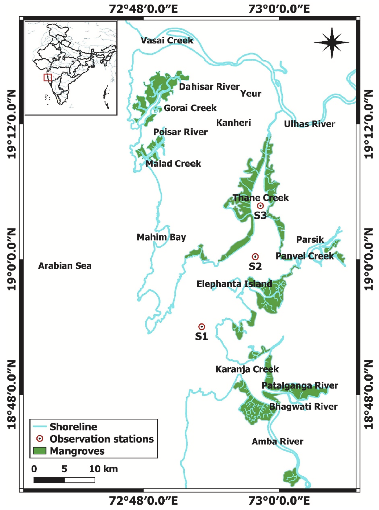
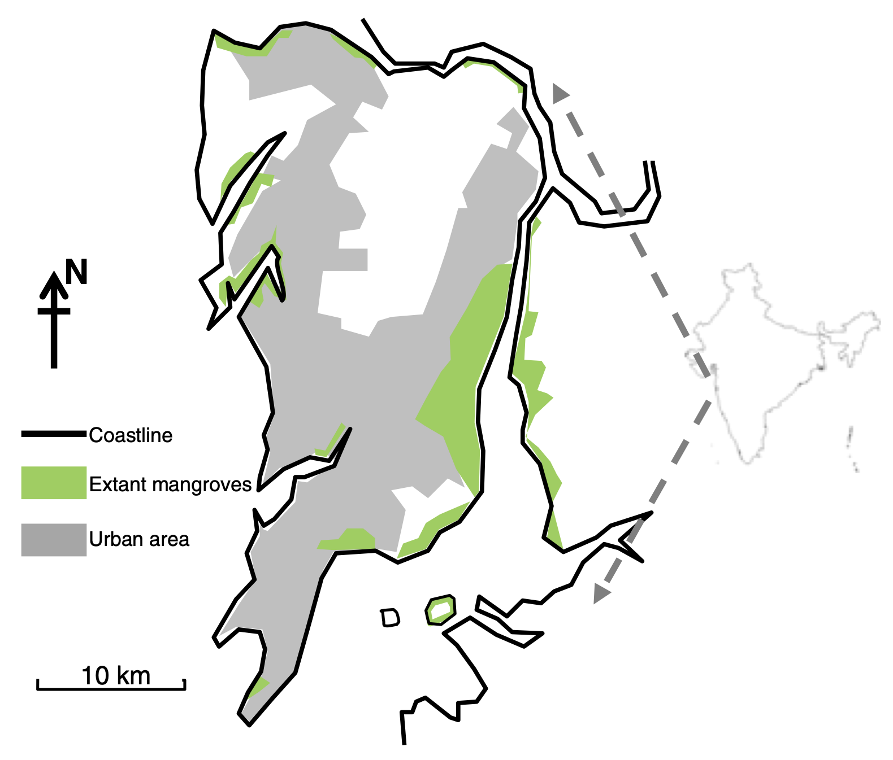
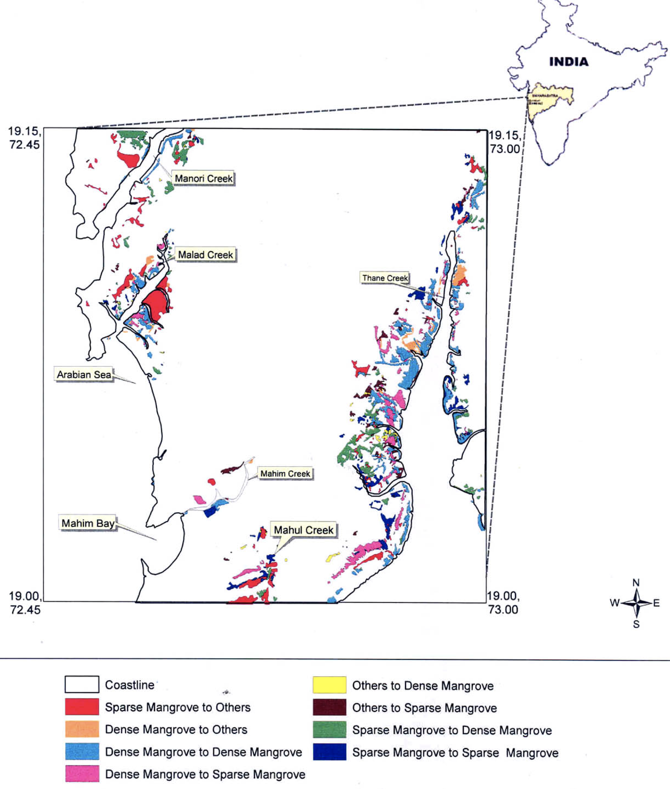

Mumbai, a bustling metropolis on the Indian coastline, is home to valuable mangrove ecosystems that play a crucial role in the city's environmental health and resilience. These unique coastal habitats serve as natural barriers against erosion, providing vital nursery grounds for marine life, and contributing significantly to carbon sequestration. However, the rapid urbanization and development of Mumbai have posed significant threats to these ecosystems, leading to their decline and degradation.
While mangroves have been recognized for their ecological benefits, the specific threats they face in Mumbai require further attention. Urbanization and development, including land reclamation, infrastructure projects, and industrial activities, have led to the clearance of mangrove forests for various purposes. This destruction of habitat has resulted in the loss of critical ecosystem services, such as coastal protection and biodiversity support.
Additionally, pollution from industrial effluents, domestic sewage, and oil spills has degraded mangrove ecosystems, affecting their health and productivity. These pollutants can contaminate water bodies, harm marine life, and reduce the ability of mangroves to function effectively. The accumulation of pollutants in mangrove sediments can also lead to long-term ecological damage.
Furthermore, climate change poses a significant threat to mangroves in Mumbai. Rising sea levels and more frequent extreme weather events, such as storms and cyclones, can increase the vulnerability of mangrove ecosystems. These changes can lead to erosion, saltwater intrusion, and habitat loss, further exacerbating the challenges faced by mangroves in the region.

Study area encompassing Thane creek, Mumbai including small creeks, rivers and mangroves, and observation stations (S1, S2 and S3)Mangrove Ecosystem Services
Mangrove ecosystems provide a vital link between terrestrial and marine environments, with their value extending far beyond mere biodiversity. These ecosystems serve as an irreplaceable buffer, protecting coastlines from erosion by stabilizing sediments with their intricate root systems. The roots of mangroves not only anchor the soil but also help improve water quality by filtering pollutants and trapping debris, which is particularly crucial in heavily polluted areas like Mumbai. This natural filtration system plays a vital role in mitigating the harmful effects of untreated sewage and industrial effluents that flow into coastal waters. By capturing sediments, mangroves also prevent sedimentation in marine ecosystems, thus maintaining water clarity and protecting nearby coral reefs.
Their ability to form protective barriers against storm surges, hurricanes, and even tsunamis makes mangroves a frontline defense against extreme weather events. The dense, sprawling root networks not only protect shorelines but also act as critical nurseries for a variety of marine species, offering safe habitats for fish, crustaceans, mollusks, and other aquatic life. This in turn supports the biodiversity and sustainability of local fisheries, which many coastal communities rely on for their livelihoods.

Distribution of Mangroves within Mumbai region
A key function of mangroves, particularly relevant in today’s context of global climate change, is their role in carbon sequestration. Mangroves are one of the most efficient carbon sinks on the planet, capturing and storing large amounts of carbon both in their biomass and in the rich, waterlogged soils beneath them. This capacity to store carbon long-term contributes significantly to mitigating the effects of climate change. In fact, the carbon storage potential of mangroves far exceeds that of most terrestrial forests, making their preservation essential in global efforts to reduce atmospheric carbon levels and slow climate change.
Despite their invaluable services, mangrove ecosystems face numerous threats, particularly in urbanized regions like Mumbai. Rapid urbanization, industrialization, and land reclamation projects have led to significant mangrove loss. The encroachment of city infrastructure, combined with rampant plastic pollution, further stresses these ecosystems. Plastic debris, untreated sewage, and toxic industrial pollutants degrade mangrove habitats and reduce their ability to function effectively. Rising sea levels, increasingly erratic rainfall patterns, and more frequent storms, driven by climate change, compound the challenges faced by mangroves, destabilizing these fragile environments even further.
The immense ecological, economic, and climate-related benefits provided by mangroves underscore the urgent need for their conservation. As coastal cities like Mumbai continue to grow, balancing development with the preservation of natural habitats like mangroves is essential for the sustainability and resilience of these urban landscapes.
Mangrove Biodiversity
Mangrove forests are unique coastal ecosystems that play a vital role in protecting coastlines, providing habitat for a diverse range of species, and sequestering carbon. In Mumbai, India, mangrove ecosystems are found along the city's coastline, providing valuable ecological services. These ecosystems are characterized by their distinctive flora and fauna, which have adapted to thrive in saline and waterlogged conditions.
The mangrove forests in Mumbai are home to a diverse array of plant species, including mangrove trees, herbs, shrubs, and epiphytes. The dominant mangrove tree species in the region are Avicennia marina, Rhizophora mucronata, and Bruguiera gymnorhiza, each with unique adaptations to survive in the challenging coastal environment. In addition to these tree species, mangrove forests support a variety of other plant life, such as herbs, shrubs, and epiphytes, which contribute to the overall biodiversity of these ecosystems.
Mangrove ecosystems are also characterized by their rich fauna, which includes a wide range of species from various taxonomic groups. Birds, mammals, reptiles, amphibians, and invertebrates all play important roles in the functioning of mangrove ecosystems. These species have evolved to utilize the unique resources and challenges provided by mangrove habitats, such as specialized feeding strategies, reproductive adaptations, and tolerance to saline conditions.
Flora
Mangrove forests in Mumbai are characterized by a diverse range of plant species, adapted to thrive in saline and waterlogged conditions. The most common mangrove tree species found in the region include:
Avicennia marina: This species is widely distributed and is known for its aerial roots, which help to stabilize the plant in soft sediments.
Rhizophora mucronata: This species is characterized by its prop roots, which provide support and help to prevent erosion.
Bruguiera gymnorhiza: This species has pneumatophores, specialized roots that grow upward to facilitate gas exchange.
In addition to these dominant tree species, mangrove forests in Mumbai also support a variety of other plant species, such as:
Mangrove ecosystems are home to a diverse array of animal species, playing crucial roles in the ecosystem's functioning. Some of the most notable fauna found in Mumbai's mangroves include:
Migratory birds: Many species migrate to Mumbai's mangroves during the winter months, including flamingos, ducks, and geese.
Mammals
Marine mammals: Dolphins, porpoises
Terrestrial mammals: Monkeys, otters, civets
Reptiles
Sea snakes: Olive ridley sea snake, banded krait
Lizards: Monitor lizards, geckos
Crocodiles: Estuarine crocodiles (rare)
Amphibians
Frogs and toads: Various species adapted to brackish water habitats
Invertebrates
Crustaceans: Crabs, shrimp, prawns
Mollusks: Oysters, clams, mussels
Fish: Mudskippers, gobies, mullet
Insects: Bees, butterflies, dragonflies
Mangrove ecosystems provide critical habitat for a wide range of species, supporting their survival, reproduction, and feeding. The diverse fauna found in Mumbai's mangroves contributes to the overall ecological health and resilience of these ecosystems.
Threats to Mangroves in Mumbai
Plastic pollution is an escalating issue that severely impacts Mumbai’s mangrove ecosystems. These mangroves, which form a crucial protective barrier for the coastline, are increasingly under threat from the growing influx of plastic waste. Mumbai, being one of India’s largest metropolitan areas, generates vast amounts of waste daily, much of which is either inadequately processed or improperly discarded. A large portion of this waste consists of plastic, which eventually finds its way into the coastal areas and mangroves.
The accumulation of plastic in the mangrove regions smothers the soil, making it difficult for mangrove roots to absorb necessary nutrients and exchange gases efficiently. This creates stress on the mangrove trees, causing stunted growth, root asphyxiation, and in many cases, the death of the plants. Over time, the weakening of mangrove root systems leads to the erosion of coastal areas, making the city more vulnerable to storms and flooding, a problem compounded by the city’s rapidly urbanizing landscape.
Microplastics, which are even more insidious, are a significant component of the plastic waste found in these ecosystems. As plastics degrade, they release toxic chemicals, which are not only harmful to the soil but also enter the food chain, affecting marine species that rely on mangroves for their habitat. Birds, fish, and crustaceans ingest plastic particles, leading to long-term damage to biodiversity. Moreover, plastic debris, especially items like bags and bottles, block tidal flows, further exacerbating the environmental damage by creating water stagnation and increasing mosquito breeding grounds, which introduces new public health risks.
Plastic pollution disrupting Mangrove ecosystems in Mumbai
Addressing these issues requires a multi-faceted approach. The first step is to improve waste management systems in Mumbai. Currently, the infrastructure struggles to keep up with the volume of waste produced, leading to widespread illegal dumping and leakage into natural ecosystems. Strengthening the capacity of local waste management services, along with stricter regulations on plastic usage, could help reduce the plastic waste entering the mangroves.
Additionally, raising awareness about plastic pollution among local communities is critical. Community-led clean-up drives, in partnership with NGOs and the government, have proven effective in certain areas of Mumbai’s coastline but need to be expanded to cover the extensive mangrove stretches.
The mangroves, while resilient, cannot withstand the continued onslaught of plastic pollution indefinitely. Their decline would not only spell disaster for local biodiversity but would also leave Mumbai increasingly exposed to natural disasters. Therefore, both immediate and long-term actions are essential to protect these critical ecosystems from further degradation due to plastic pollution.
The proposed construction of the third Vachi bridge poses a significant threat to the mangrove ecosystems in the region. The bridge will necessitate the clearance of a substantial expanse of mangrove forests, leading to direct habitat loss for numerous species. This destruction will have several adverse environmental and socioeconomic consequences.
The loss of mangrove habitats will have a detrimental impact on local fisheries, as mangroves serve as critical breeding and nursery grounds for various fish and shellfish species. Moreover, the removal of mangroves will increase the vulnerability of Vachi to coastal erosion and flooding, potentially leading to property damage and loss of livelihoods. Mangroves also play a vital role in filtering pollutants and sediments from water bodies, and their destruction will result in deteriorating water quality, affecting marine ecosystems and the health of local communities.
The construction of the bridge may also indirectly affect mangroves through increased human activity and development in the area. The development of infrastructure and facilities associated with the bridge could lead to pollution, habitat fragmentation, and other environmental pressures on mangrove ecosystems.
Legal Framework for Mangrove Conservation
India’s approach to mangrove management has evolved significantly over the years, transitioning from a resource extraction perspective to one that recognizes the critical ecological services these ecosystems provide. Historically, mangrove policies were largely focused on their economic utility—primarily the extraction of wood, support for fisheries, and coastal land use. This was reflective of the value placed on mangroves as economic resources rather than as vital ecological buffers. However, as scientific understanding deepened, the crucial roles of mangroves in coastal protection, biodiversity conservation, and carbon sequestration became more apparent, necessitating a shift towards more sustainable, conservation-oriented management.
International commitments, particularly India's ratification of the Ramsar Convention on Wetlands, played a pivotal role in driving this shift. India’s participation in such conventions has pushed for stricter protection measures for wetland ecosystems, including mangroves. Domestically, key policies like the Coastal Regulation Zone (CRZ) Notification of 1991 have been instrumental in providing legal safeguards for mangroves. This legislation restricts industrial and urban encroachment into critical coastal areas, helping to conserve these ecosystems from degradation.
Furthermore, the Environment (Protection) Act of 1986 provided an overarching framework for environmental protection, empowering the central government to enact measures for the conservation of mangroves, among other ecosystems. Under this act, the CRZ was introduced, creating legally protected zones to prevent harmful development activities along the coast. The classification of mangroves as "forests" under the Forest Conservation Act of 1980 extended their protection by preventing their conversion to other land uses, reinforcing their legal status as ecological assets.
Institutional efforts have also supported mangrove conservation. The establishment of the National Mangrove Committee, working in tandem with the Ministry of Environment, Forest and Climate Change (MoEFCC), has played a central role in coordinating efforts at both state and national levels. These bodies are responsible for policy implementation and the regeneration of degraded mangrove ecosystems.
Importantly, the role of local communities has been integrated into mangrove conservation through legislation like the Biodiversity Act of 2002, which emphasizes the involvement of local communities and the recognition of traditional knowledge in biodiversity conservation efforts. This has led to several successful community-based conservation and restoration initiatives, which have been vital in ensuring sustainable mangrove management.
Technological advancements have further bolstered the effectiveness of these policies. Tools such as remote sensing and GIS have been employed to monitor mangrove health and detect environmental changes, providing critical data for decision-making. By utilizing these tools, the government can identify vulnerable areas and track the impact of conservation policies in real-time.
However, despite these advances, significant challenges remain. Unregulated urbanization, industrial activities, pollution, and illegal encroachments continue to threaten mangroves. Enforcement of regulations remains a weak link in India’s mangrove conservation strategy, with many areas still suffering from illegal deforestation and land reclamation. Additionally, climate change presents new challenges, including rising sea levels and increased storm intensity, which compound the vulnerability of mangrove ecosystems.
For India to maintain and improve the protection of its mangrove ecosystems, ongoing legislative updates are necessary to address emerging threats. A greater emphasis on enforcing existing laws, increasing community participation, and adopting climate-resilient management strategies will be essential in ensuring the long-term survival of mangroves. Leveraging the country’s comprehensive legal framework and integrating technological innovations will be key to sustaining these critical coastal ecosystems.
This integrated approach has already shown promise, with several successful restoration projects across the country. Continued efforts to update the legal framework, improve enforcement, and engage communities in sustainable management are critical to safeguarding India’s mangroves for future generations.
Community Involvement in Conservation Efforts
Community participation has become an indispensable part of Maharashtra's mangrove conservation strategy, particularly as the state's coastal regions face increasing environmental threats from urbanization, industrial activity, and pollution. Recognizing the importance of involving local populations, the Mangroves Cell of Maharashtra has initiated a series of awareness campaigns aimed at educating residents, fishermen, students, and other key stakeholders. These programs have focused on illustrating the ecological significance of mangroves, not only as protectors of coastlines but also as vital resources for local livelihoods through fisheries, tourism, and other industries dependent on coastal ecosystems.
Local community Mangrove conservation efforts
One of the primary goals of these initiatives is to foster a sense of ownership among coastal communities. This is achieved by encouraging residents to actively participate in the monitoring and protection of mangroves in their vicinity. For example, local communities are trained to recognize illegal activities such as mangrove destruction and report these to authorities. By creating networks of local “eco-warriors,” Maharashtra has successfully harnessed community vigilance to curb encroachments and other harmful practices.
Additionally, the state has promoted sustainable mangrove tourism as a means of incentivizing conservation efforts. Eco-tourism projects, guided tours, and community-run mangrove tours allow locals to benefit economically while reinforcing the importance of mangrove protection. These initiatives not only generate income but also serve as educational platforms, further deepening community involvement. Programs like eco-clubs in schools and local committees for monitoring have become fundamental in integrating environmental stewardship into the daily lives of coastal residents.
Mangrove Restoration Projects
Maharashtra has spearheaded a series of mangrove restoration projects, particularly in areas where mangroves have been severely degraded due to urbanization, industrial pollution, and unsustainable land use practices. The government, along with the Mangroves Cell, has employed a mix of traditional knowledge and modern technology to restore these ecosystems effectively. One of the key components of these projects has been the use of remote sensing and Geographic Information Systems (GIS) to identify degraded areas and monitor the progress of restoration efforts. This data-driven approach enables a precise understanding of how to prioritize restoration activities and manage resources efficiently.Maharashtra has spearheaded a series of mangrove restoration projects, particularly in areas where mangroves have been severely degraded due to urbanization, industrial pollution, and unsustainable land use practices. The government, along with the Mangroves Cell, has employed a mix of traditional knowledge and modern technology to restore these ecosystems effectively. One of the key components of these projects has been the use of remote sensing and Geographic Information Systems (GIS) to identify degraded areas and monitor the progress of restoration efforts. This data-driven approach enables a precise understanding of how to prioritize restoration activities and manage resources efficiently.
The state has also undertaken large-scale afforestation projects, where saplings are planted in deforested coastal areas. This not only helps rebuild mangrove ecosystems but also provides jobs to local communities who are actively involved in the planting and maintenance processes. Beyond just planting mangroves, these projects often incorporate the creation of buffer zones between mangrove forests and urban areas to protect these ecosystems from further encroachment and pollution. These zones serve as critical barriers, absorbing the brunt of industrial runoff and urban waste, thus shielding the fragile mangroves from immediate harm.
Community-based restoration has also been a cornerstone of Maharashtra’s approach. These initiatives ensure that local residents are not just passive beneficiaries of the projects but active participants. By involving communities in both planting and monitoring efforts, Maharashtra ensures that conservation is not a top-down approach but one that integrates grassroots involvement. Educational programs teach the importance of mangrove restoration to long-term ecological and economic health, reinforcing community responsibility toward these ecosystems.
The collaboration between government bodies, NGOs, and local communities has created a multi-stakeholder approach that bolsters the sustainability of these restoration projects. Continuous monitoring, coupled with adaptive management strategies, ensures that the restored mangrove areas are resilient to future environmental changes, including those posed by climate change. By investing in community-based restoration, Maharashtra not only improves local biodiversity but also fortifies its coastal defenses against natural disasters, securing both ecological and economic futures for the region.
Impact of Climate Change on Mangroves
Mangrove ecosystems are particularly vulnerable to the effects of climate change. The rising sea levels caused by global warming threaten to submerge large areas of mangroves, especially in low-lying coastal regions. As sea levels rise, the delicate balance of salinity in these ecosystems is disrupted, which impacts the health and survival of mangrove species. Mangroves typically thrive in a mix of fresh and saltwater, but increased salinity levels due to seawater intrusion can stress the trees, leading to lower growth rates and, in extreme cases, tree mortality.
Mangrove ecosystems are particularly vulnerable to the effects of climate change. The rising sea levels caused by global warming threaten to submerge large areas of mangroves, especially in low-lying coastal regions. As sea levels rise, the delicate balance of salinity in these ecosystems is disrupted, which impacts the health and survival of mangrove species. Mangroves typically thrive in a mix of fresh and saltwater, but increased salinity levels due to seawater intrusion can stress the trees, leading to lower growth rates and, in extreme cases, tree mortality.
Storms, hurricanes, and extreme weather events, which are predicted to increase in frequency and intensity due to climate change, pose another significant threat to mangroves. Strong winds and tidal surges can damage the physical structure of mangroves, uprooting trees and eroding the soil. Mangroves are known to act as natural barriers, absorbing the impact of storms and protecting inland areas. However, as their health deteriorates under the combined stress of climate change, their ability to buffer these natural disasters diminishes, leaving coastal communities more exposed.
Additionally, climate change leads to shifts in the distribution of mangrove species. As temperatures rise and weather patterns change, certain species of mangroves are likely to shift poleward, seeking more favorable conditions. This migration, however, is often limited by human development along coastlines, such as infrastructure, cities, and agriculture, which prevent mangroves from naturally expanding into new areas.
To combat the effects of climate change, concerted efforts must be made to restore and protect mangrove ecosystems. Restoration projects, when done effectively, can help re-establish mangroves in areas where they have been lost and can create resilience against the long-term impacts of climate change. Protecting existing mangrove forests through sustainable development practices and reducing greenhouse gas emissions are also critical in ensuring their survival. Adaptation strategies that involve both natural and human intervention are essential in preserving these ecosystems for the future.
Technological Tools and Data Analysis in Mangrove Conservation
In recent years, technological advancements like remote sensing and GIS have revolutionized the way we monitor environmental changes. These tools have proven essential in tracking the health and extent of mangrove ecosystems, especially in urban areas like Mumbai, where human activity has dramatically affected natural landscapes. The use of remotely sensed data allows scientists to capture satellite images over time and detect the shifts in land cover, including the shrinkage or growth of mangrove forests.
Mumbai, being a densely populated megacity, faces tremendous developmental pressure, and as a result, mangrove ecosystems have been systematically encroached upon for infrastructure projects. The real estate boom, expansion of industrial zones, and road construction have all contributed to significant habitat loss. By employing remote sensing techniques, researchers have been able to map and quantify this loss over the decades, providing crucial insights into the areas most at risk and the rate at which degradation is occurring.
One of the key findings is that the northern and central parts of the Mumbai coastline have seen a sharp decline in mangrove cover due to land reclamation for urban development. However, in contrast, there are areas where conservation measures have stabilized or even slightly increased mangrove presence. This dichotomy highlights the critical role of government policies, enforcement of environmental regulations, and active restoration efforts in preserving these ecosystems.
The use of satellite imagery enables real-time monitoring, which is vital for managing conservation efforts effectively. Historical satellite data allows conservationists to identify trends, pinpoint hotspots of degradation, and understand the anthropogenic pressures that contribute to mangrove loss. When combined with GIS, it becomes possible to create detailed maps that can be overlaid with demographic, industrial, and climatic data to develop predictive models. These models help decision-makers plan future conservation strategies and urban development in a manner that minimizes environmental impact.

GIS related data linking Mangrove distribution to urban development in the Mumbai region
Moreover, remote sensing helps detect changes that are not visible at ground level. For example, the gradual degradation of mangroves due to pollution from nearby industries may not be immediately apparent to the naked eye but can be observed in satellite data through spectral analysis. This capability to detect subtle changes is critical for timely intervention and remediation.
Technological mapping also facilitates large-scale restoration projects by identifying potential areas for replanting and tracking the success rates of restored sites. In places where mangroves have been lost due to illegal encroachments, maps generated through remote sensing provide the evidence needed to take legal action or reclaim and restore the land. These maps also help in educating local communities about the importance of mangroves, fostering community-driven conservation efforts.
Despite the advancements, the full potential of remote sensing in mangrove conservation is still untapped. Limitations like cloud cover in tropical regions and the high costs associated with high-resolution satellite data are challenges that need to be overcome. As technology continues to evolve, more sophisticated, cost-effective tools will emerge, further enhancing our ability to safeguard these vital ecosystems.
Remote Sensing Data for Mangrove Cover Analysis:
Satellite images from sources like Landsat (NASA) or Sentinel-2 (European Space Agency) can be used to monitor mangrove cover over time.
Data includes measurements of the NDVI (Normalized Difference Vegetation Index) values, which assess mangrove health by comparing pixel reflectance in near-infrared and visible red bands.
Data on the distribution of mangroves, combined with various environmental layers (e.g., urbanization, industrial zones, water quality), visualized using GIS software.
{
"type": "GIS_layers",
"layers": [
{
"name": "Mangrove_extent_2024",
"description": "Current mangrove extent based on satellite imagery",
"format": "GeoTIFF",
"data_source": "Sentinel-2"
},
{
"name": "Urbanization_buffer_zone",
"description": "Urbanization zones within 2km of mangroves",
"format": "Shapefile",
"data_source": "Mumbai City Planning Department"
}
]
}
Biodiversity Metrics Collected via Drones:
Drones equipped with thermal or multispectral cameras can capture data on species diversity and habitat conditions. These can be linked to biodiversity indices or specific species monitoring programs.
Data from IoT sensors deployed in mangrove areas to track water salinity, pH, temperature, and pollution levels are used to assess the health of the ecosystem.
{
"sensor_id": "WQ456",
"location": "Thane Creek, Mumbai",
"data": {
"salinity_ppt": 34,
"pH_level": 7.8,
"temperature_celsius": 26.5,
"plastic_pollution_concentration_mg_l": 12.3
},
"collection_date": "2024-10-12"
}
Role of Mangroves in Carbon Sequestration
Mangroves play a critical role in addressing climate change by acting as efficient carbon sinks. These unique coastal ecosystems are capable of sequestering large amounts of carbon dioxide from the atmosphere, storing it both above ground in their biomass and below ground in the soil. The dense root systems of mangroves trap sediment and organic matter, which helps in capturing and holding onto carbon for centuries, preventing it from re-entering the atmosphere.
However, the destruction of mangroves due to urbanization, aquaculture, and deforestation poses a significant threat to their ability to sequester carbon. When mangroves are removed or degraded, the carbon stored within their biomass and soil is released back into the atmosphere, contributing to the greenhouse effect and intensifying climate change. This release of carbon, known as "blue carbon," makes the conservation and restoration of mangrove ecosystems vital in the fight against global warming.
Moreover, as climate change progresses, mangroves themselves are at risk. Rising sea levels, increasing temperatures, and changes in salinity all threaten their survival. Mangroves, which thrive in a delicate balance of saltwater and freshwater, can be severely impacted by higher water levels and salinity changes, leading to habitat loss for the various species that depend on them.
Preserving mangroves not only helps reduce carbon emissions but also offers co-benefits for biodiversity and coastal communities. These ecosystems act as natural barriers, protecting coastal areas from storm surges, erosion, and flooding. Additionally, mangroves provide habitat for a diverse range of species, from fish to migratory birds, thus supporting both marine and terrestrial biodiversity.
To ensure the continued role of mangroves in climate mitigation, it is essential to implement sustainable management practices. This includes reforestation efforts, creating protected areas, and involving local communities in conservation initiatives. Global cooperation is also necessary, as mangroves are found in tropical and subtropical regions across the world, and their protection requires concerted efforts from multiple nations.
Educational Programs and Awareness Campaigns
Various studies have highlighted the pivotal role that education and community awareness play in mangrove conservation. These programs typically target local communities, youth, and government stakeholders to foster a deeper understanding of the environmental, social, and economic significance of mangroves.
One of the key strategies in raising awareness has been engaging schools and universities in mangrove conservation activities. Educational programs are designed to introduce students to the critical ecosystem services provided by mangroves, such as coastal protection, fisheries support, and carbon sequestration. These initiatives often involve field trips, hands-on restoration projects, and collaboration with local conservation bodies to enhance the learning experience. This direct involvement with mangrove ecosystems fosters a sense of responsibility and environmental stewardship among the younger generation.
Moreover, many NGOs and governmental bodies, including the Mangrove Cell in Maharashtra, have actively organized workshops, public seminars, and exhibitions to promote awareness about mangroves. These events focus on informing communities about the dangers posed by pollution, illegal land reclamation, and deforestation. The campaigns also encourage sustainable livelihoods through ecotourism and alternative income sources like beekeeping and fisheries, ensuring that the local economy is not compromised while protecting the environment.
Social media campaigns and partnerships with local media have amplified the outreach of these awareness programs, making them accessible to a broader audience. Community radio programs and television segments dedicated to mangrove conservation have been effective in spreading critical information about the ongoing threats and the efforts needed to protect these ecosystems. The incorporation of digital tools like mobile apps for mangrove education and pollution tracking has further modernized these campaigns, making information easily accessible and actionable for the general public.
Research and Publications on Mangroves
The accumulation of research and academic publications on mangroves has been instrumental in shaping conservation strategies and policies. Research has evolved over the years to address a wide range of issues, including the role of mangroves in climate change mitigation, biodiversity conservation, and coastal zone management.
Studies from institutions such as the Madras School of Economics and research centers in India have delved into the capacity of mangroves for carbon sequestration, positioning these ecosystems as critical players in the global effort to reduce greenhouse gas emissions. Additionally, many researchers have focused on the socio-economic benefits that mangroves provide to coastal communities, especially in terms of fisheries, agriculture, and storm protection.
Technological advancements have also driven a new wave of research. Remote sensing and Geographic Information Systems (GIS) are now extensively used to monitor changes in mangrove cover, assess the health of mangrove ecosystems, and track restoration efforts. This technology enables more accurate, data-driven decisions for policymakers and conservationists alike. Publications related to the application of these technologies offer crucial insights into the patterns of mangrove degradation and the potential for large-scale restoration projects.
Moreover, there has been a growing focus on integrating indigenous knowledge with scientific research. Publications often highlight how traditional practices, used by coastal communities for centuries, can be combined with modern techniques to foster more sustainable mangrove management. This interdisciplinary approach is seen as vital for developing holistic conservation strategies that are both ecologically sound and culturally inclusive.
Overall, the expanding body of research on mangroves continues to provide invaluable guidance for future conservation efforts. As challenges such as climate change, urban expansion, and industrial pollution intensify, these academic contributions will be critical in informing policy adaptations and sustainable management practices.
Case Studies of Successful Mangrove Conservation
Save Our Mangroves Campaign
In the fight to restore mangroves, community-led initiatives have played a pivotal role in successful restoration efforts. One such case study from India emphasizes the collaborative approach between government bodies, local stakeholders, and conservation organizations. The project focused on rehabilitating degraded mangrove forests by using local knowledge and traditional practices to ensure a sustainable recovery process. By engaging local communities, the project not only restored the mangrove areas but also created new employment opportunities for local residents, particularly through eco-tourism and the sustainable harvest of mangrove resources.
An essential factor in this success was the use of technology. Remote sensing and geographic information systems (GIS) were employed to monitor the health and spread of mangroves, allowing the project to track progress accurately and identify areas requiring further intervention. In addition to these technical methods, the project highlighted the importance of raising awareness among the community through educational programs. These initiatives aimed to inform people about the long-term benefits of preserving mangroves for flood protection, carbon sequestration, and biodiversity conservation.
The case study also revealed that policy frameworks supporting mangrove protection at the local and national levels are crucial. Without strong legal backing and the enforcement of environmental regulations, conservation efforts can be easily undone by industrial activities or urban expansion. In this case, the presence of laws that restrict encroachment and pollution in mangrove areas enabled the project to safeguard the ecosystem effectively.
This successful example underscores the importance of multi-stakeholder collaboration, the integration of technology, and the need for strong legal frameworks in achieving sustainable mangrove conservation. By leveraging these factors, mangrove restoration can provide both environmental and socio-economic benefits to local communities.
Assessment of Mangrove Ecosystem using Machine Learning
The case study focuses on initiatives that have been successful due to active community involvement and strategic partnerships with NGOs and government bodies. This case study highlights the Karanja Creek Mangrove Restoration Project, which has been recognized for its innovative approach in rehabilitating degraded mangrove ecosystems through grassroots engagement.
In this project, the local community played a crucial role in both the planning and execution stages of mangrove restoration. With training from environmental NGOs, community members learned to cultivate and plant mangrove saplings, monitor growth, and manage potential threats like pollution and illegal encroachment. These activities were integrated into their daily lives, ensuring that the restoration effort became a sustainable practice over time. Local fishers, for example, were educated on the benefits of mangroves in enhancing fish populations, creating an incentive for them to protect the mangrove areas.
Additionally, the project placed a strong emphasis on youth education and environmental awareness, incorporating local schools in workshops and tree-planting activities. This helped foster a deeper connection between younger generations and their natural surroundings, ensuring long-term conservation efforts. The program’s success was attributed to a holistic approach, which combined environmental education with livelihood improvements, creating a sense of ownership among the community members.
This case study underscores the power of community-driven conservation and demonstrates how restoration efforts can thrive when supported by local knowledge and external expertise. The success of this project serves as a model for other regions in India, highlighting the importance of combining scientific research, community participation, and policy support for effective mangrove restoration.
Future Directions for Mangrove Conservation
In looking towards the future of mangrove conservation in India, several key areas require attention and innovative approaches. First, there is a pressing need to shift from a reactive to a proactive conservation strategy. This means focusing not only on restoration but also on the prevention of mangrove loss through stringent legal frameworks, better enforcement, and stronger penalties for violations. Moreover, integrating mangrove management into broader climate adaptation strategies is crucial, given the increasing risks posed by rising sea levels and erratic weather patterns.
Another important future direction involves expanding community-based conservation efforts. While current initiatives have seen success in engaging local populations, future projects should aim for deeper collaboration, empowering communities with both resources and decision-making power. By doing so, conservation efforts can become more sustainable and aligned with the needs of those directly reliant on mangrove ecosystems.
The use of technology will also play a significant role in the future of mangrove conservation. Remote sensing, GIS, and drone technology can provide real-time data on mangrove health, helping authorities track deforestation, illegal encroachments, and the impact of climate change more effectively. This technological shift needs to be supported by stronger institutional capacity, ensuring that data is not only collected but effectively utilized to inform conservation policies.
Financial mechanisms such as Payments for Ecosystem Services (PES) could incentivize both communities and businesses to invest in mangrove protection. Additionally, there is potential in exploring blue carbon initiatives, where the carbon sequestration capacity of mangroves can be monetized through carbon credit markets, providing an economic incentive for their conservation.
Lastly, research and education should be prioritized. Ongoing scientific research into mangrove ecology, restoration techniques, and climate resilience will provide the necessary knowledge base for future conservation strategies. Alongside this, public awareness campaigns and educational programs can help foster a culture of conservation, ensuring that mangrove protection becomes a national priority.
References
Jha, R., & Chauhan, B. M. (2014). The benefits of fringing mangrove systems to Mumbai. ResearchGate. Retrieved from https://www.researchgate.net/publication/264405208_The_benefits_of_fringing_mangrove_systems_to_Mumbai
Jha, R., & Chauhan, B. M. (2014). The benefits of fringing mangrove systems to Mumbai. ResearchGate. Retrieved from https://www.researchgate.net/publication/264405208_The_benefits_of_fringing_mangrove_systems_to_Mumbai
Wilkins, L. B., Benevides, C. M., & Riley, S. A. (2022). Understanding the role of mangroves in climate adaptation and resilience. VTechWorks. Retrieved from https://vtechworks.lib.vt.edu/server/api/core/bitstreams/b113941a-cb9b-4384-9121-32e96571a148/content
Shrestha, M. (2022). Understanding the benefits of mangrove ecosystems. International Journal of Forestry and Agriculture. Retrieved from https://www.aipublications.com/uploads/issue_files/1IJFAF-MAY20222-Understanding.pdf
Jayasiri, H. B., Purvaja, R., Ramesh, R., & Wilson, S. (2021). Plastic pollution in mangrove ecosystems of Mumbai, India. ScienceDirect. Retrieved from https://pdf.sciencedirectassets.com/main.pdf?X-Amz-Date=20241018T160215Z&X-Amz-SignedHeaders=host&X-Amz-Expires=300
Kantharajan, G., Purvaja, R., Ramesh, R., & Wilson, S. (2018). Plastics: A menace to the mangrove ecosystems of megacity Mumbai, India. ResearchGate. Retrieved from https://www.researchgate.net/publication/323676327_Plastics_A_menace_to_the_mangrove_ecosystems_of_megacity_Mumbai_India
Free Press Journal. (2023, July 26). International Day for Conservation of Mangrove Ecosystems: Mumbai to identify nullahs carrying trash into mangrove forests. Free Press Journal. Retrieved from https://www.freepressjournal.in/mumbai/international-day-for-conservation-of-mangrove-ecosystems-mumbai-to-identify-nullahs-carrying-trash-into-mangrove-forests
DasGupta, R., & Shaw, R. (2013). Changing perspectives of mangrove management in India: An overview. Ocean & Coastal Management, 80, 107-118. https://www.researchgate.net/publication/257129937_Changing_Perspectives_of_Mangrove_Management_in_India_An_Overview
Social Works Review (2021). Case Study: Mangrove Conservation Efforts in Mumbai. Social Works Review. https://www.socialworksreview.com/index.php/Journal/article/download/7/7
Mani, S. (2012). Protection of Mangroves: A Study with Special Reference to India. International Journal of Physical and Social Sciences, 2(12), 112-122. Retrieved from https://www.researchgate.net/publication/228226447_Protection_of_Mangroves_A_Study_with_Special_Reference_to_India.
Ravindra, P., & Laskar, A. (2021). Future directions for mangrove conservation in India: An analysis of current strategies and emerging opportunities. Madras School of Economics Working Paper 174. Retrieved from https://www.mse.ac.in/wp-content/uploads/2021/05/Working-Paper-174.pdf
Mangroves Cell, Maharashtra Government. (n.d.). Mangroves of Maharashtra: Role, Development, and Sustainable Habitat (RDSH). Retrieved from https://mangroves.maharashtra.gov.in.
Madras School of Economics. (2021). Future Directions for Mangrove Conservation in India (Working Paper No. 174). Retrieved from https://www.mse.ac.in.
Government of Maharashtra. (n.d.). Integrated Information System for Mangroves (IIST)
. Retrieved from https://mangroves.maharashtra.gov.in/Site/SiteInfo/Pdf/IIST.pdf
The Design Gesture (n.d.). Mumbai mangroves and their vital role. Retrieved from https://thedesigngesture.com/mumbai-mangroves-and-their-vital-role/
Earth Island Institute (n.d.). Home. Retrieved from
https://www.earthisland.org/
MDPI (2020). Contribution of mangrove forest to the livelihood of local communities in Ayeyarwady Region, Myanmar. Retrieved from https://www.researchgate.net/publication/333061928_Contribution_of_Mangrove_Forest_to_the_Livelihood_of_Local_Communities_in_Ayeyarwaddy_Region_Myanmar